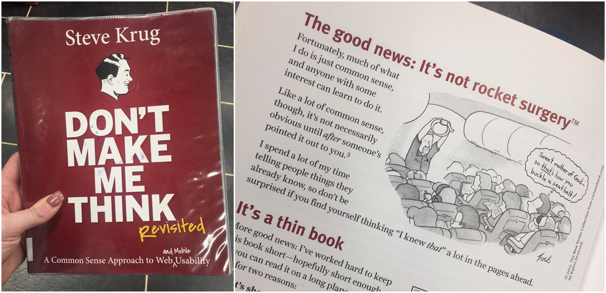

Don't Make Me Think: Chapters 1-5

I read this book about a year ago, while taking a web design class.
I remember enjoying then, because it was very clear and entertaining, as well
as useful, which is great for books and for websites. Rereading it now
has not changed my impressions. The first five chapters talk about
the importance and the ways in which websites can be made
as easy to navigate as possible.
More specifically, the first chapter tells us we should make everything
on the webpage obvious. The second chapter tells us why we should do it.
Chapters 3-5 specify ways to make things as obvious as can be.
Here's a list of goals:
And now for something completely different.
Here's a list of goals:
- The first thing you should do is try to make things as self evident as possible
- If things cannot be made self evident, they should at least base self explanatory
- The user is going to treat your website as a billboard, so design a great billboard
- Use conventions
- Give clear and easy choices
- Avoid "happy talk"
And now for something completely different.